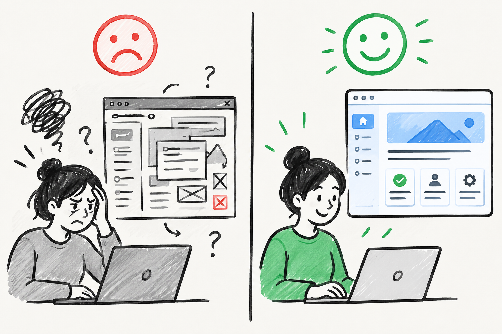

لماذا تفشل المواقع الجميلة بدون تجربة المستخدم..؟

يقال إن المنتج الناجح هو الذي يستطيع المستخدم فهم آلية استخدامه في أقل من دقيقة. يشرح هذا المقال ما هي تجربة المستخدم، ولماذا هي محور تصميم المواقع، وكيف تؤثر في سهولة الاستخدام والتحويل وإمكانية الوصول.
تجربة تسوق بسيطة تُظهر تجربة المستخدم قيد التنفيذ
تخيّل مستخدمًا يدخل إلى متجر إلكتروني لشراء حذاء رياضي، فيجد زر البحث واضحًا في أعلى الصفحة، والتصنيفات مرتّبة بعناية، والصور عالية الدقة، مع معلومات مختصرة ومباشرة عن كل منتج. يختار الحذاء المناسب، يحدد اللون والمقاس بسهولة، ثم ينتقل إلى صفحة الدفع ليجد خطوات واضحة، وطرق دفع متعددة، مع توضيح لرسوم الشحن وموعد الاستلام وسياسة الاسترجاع. ينجز عملية الشراء دون تردد أو إرباك، ويخرج بشعور بالرضا والثقة. ما حدث هنا هو تطبيق عملي لمفهوم تجربة المستخدم (UX) في تصميم موقع الويب.
ما هي تجربة المستخدم في مواقع الويب؟
تجربة المستخدم (User Experience – UX) هي مجموع الانطباعات والتفاعلات التي يمر بها المستخدم أثناء استخدام موقع الويب، بدءًا من لحظة الدخول وحتى مغادرته. لا تتعلق UX بالشكل الجمالي للموقع فقط، بل تشمل سهولة التصفح، وضوح المعلومات، منطقية الترتيب، سرعة الوصول إلى الهدف، وشعور المستخدم بالراحة والثقة أثناء التفاعل. أي أن UX هي مزيج من التصميم، والسلوك، والمحتوى، والتقنية، يتكامل ليخدم احتياجات المستخدم ويحترم وقته وجهده. وهذا هو منطق التصميم المتمحور حول المستخدم الذي يعرضه غاريت للويب وما بعده[1].
لماذا تعتبر تجربة المستخدم محورًا أساسيًا في تصميم المواقع؟
أهمية تبني مبادئ تجربة المستخدم في تصميم مواقع الويب تنبع من كونها نقطة الالتقاء بين أهداف المستخدم وأهداف صاحب الموقع. فالمستخدم يريد إنجاز مهمة معينة بأقل وقت وجهد، وصاحب الموقع يريد تحقيق هدف واضح مثل زيادة المبيعات، أو جذب القرّاء، أو تسجيل المشتركين. تصميم تجربة استخدام مدروسة يجعل الوصول إلى هذه الأهداف أكثر سلاسة، ويحوّل الموقع من مجرد واجهة معلوماتية إلى أداة فعّالة تحقق نتائج ملموسة.
من الناحية العملية، موقع يقدّم تجربة استخدام جيدة يقلل من احتمالية مغادرة المستخدم في ثوانيه الأولى، ويزيد من فرص بقائه واستكشافه لبقية الصفحات. هذه السلوكيات تنعكس على مؤشرات الأداء مثل معدّل الارتداد (Bounce Rate)، ومتوسط زمن الجلسة، وعدد الصفحات التي يزورها المستخدم، وهي مؤشرات تقيس جودة الموقع وسهولة استخدامه. يلخّص الجدول التالي أربعة جوانب رئيسية وما يقابلها من أسئلة ومؤشرات.
| الجانب | السؤال الذي يجيب عنه | مثال من المتجر | مؤشر المتابعة |
|---|---|---|---|
| قابلية الاستخدام | هل ينجز المستخدم مهمته بسهولة؟ | زر بحث واضح وتصنيفات مألوفة | زمن إنجاز المهمة، ونسبة الأخطاء |
| التفاعل والبقاء | هل يبقى المستخدم ويستكشف؟ | صور واضحة ومعلومات مختصرة | معدل الارتداد، ومتوسط زمن الجلسة، وعدد الصفحات |
| التحويل | هل يُكمل الهدف المطلوب؟ | دفع بخطوات واضحة وسياسة استرجاع معلنة | معدل التحويل، والسلال المهجورة |
| إمكانية الوصول | هل يستطيع الجميع الاستخدام؟ | تباين كافٍ ووصف للصور ودعم لوحة المفاتيح | الالتزام بإرشادات WCAG |
تأثير تجربة المستخدم على سهولة الاستخدام وكفاءة الأداء
أحد أهم أبعاد UX هو قابلية الاستخدام (Usability)، أي مدى سهولة تعلم استخدام الموقع، وسرعة تنفيذ المهام، وقلّة الأخطاء التي يقع فيها المستخدم[2]. عندما تكون عناصر الواجهة واضحة، والأزرار مميّزة، ومسارات التنقل منطقية، فإن المستخدم يستطيع إنجاز ما يريد دون الحاجة لشرح أو دليل. في مثال متجر الأحذية السابق، وضوح زر البحث، ووجود تصنيفات مفهومة مثل «أحذية رياضية» و«أحذية للجري»، واستخدام تسميات مألوفة، كلها عناصر تقلل العبء المعرفي على المستخدم، وتجعل تجربته أقرب إلى التلقائية.
من منظور علم التفاعل بين الإنسان والحاسوب (HCI)، كل خطوة غير ضرورية، وكل رسالة غامضة، وكل عنصر غير متسق يضيف عبئًا ذهنيًا على المستخدم، ويزيد احتمال الانسحاب أو الخطأ. لذلك، أحد أهداف UX الأساسية هو إزالة التعقيد غير المبرر، وتقليل عدد الخطوات للوصول إلى الهدف، وتقديم تغذية راجعة واضحة في كل مرحلة من مراحل التفاعل.

دور تجربة المستخدم في زيادة معدلات التحويل
تجربة المستخدم ليست فقط مسألة راحة للمستخدم، بل لها أثر مباشر على المؤشرات التجارية، مثل معدلات التحويل (Conversion Rates). في المواقع التجارية، قد يكون الفرق بين عملية شراء مكتملة وسلّة مهجورة هو تفاصيل صغيرة في UX: نموذج دفع طويل ومعقد، زر تأكيد غير واضح، أو غياب توضيح لسياسة الاسترجاع. عندما يتم تصميم صفحات الدفع ونماذج التسجيل بعناية، مع حقول منظمة، وتسميات واضحة، ورسائل تنبيه مفهومة، يزيد احتمال إتمام العملية بنجاح.
هذا يعني أن الاستثمار في UX يمكن أن يُترجم مباشرة إلى زيادة في الإيرادات أو عدد المشتركين أو العملاء المحتملين. وقد يرفع تحسين تجربة المستخدم في مسار حرج واحد، مثل مسار الشراء، التحويلات دون أي تغيير في عدد الزوار.
ملاحظة: نسبة التحسن تختلف من موقع إلى آخر، ولا يصح نقل رقم بعينه من موقع إلى غيره؛ لذلك يُقاس الأثر على موقعك قبل التغيير وبعده.
أهمية الشمولية وإمكانية الوصول ضمن تجربة المستخدم
جزء أساسي من تبني مبادئ UX هو الالتزام بإمكانية الوصول (Accessibility)، أي ضمان أن الموقع يمكن استخدامه من قبل أوسع شريحة ممكنة من المستخدمين، بما في ذلك الأشخاص ذوو الإعاقات البصرية أو السمعية أو الحركية أو الإدراكية. الالتزام بإرشادات مثل WCAG يضمن مثلًا:
- وجود تباين لوني كافٍ بين النص والخلفية.
- وصف نصي للصور.
- قابلية استخدام الموقع عبر لوحة المفاتيح فقط.
- دعم قارئات الشاشة.
هذه الممارسات لا تعكس فقط احترامًا للبعد الإنساني والأخلاقي، بل توسّع أيضًا قاعدة المستخدمين المحتملين للموقع، وتزيد من فرص استخدامه في بيئات مختلفة وأجهزة متنوعة. كما أن عديدًا من التشريعات في العالم بدأت تجعل من الوصول الرقمي مطلبًا قانونيًا، ما يضيف بُعدًا تنظيميًا لتبني مبادئ UX في هذا الجانب.
ملاحظة: أثناء بناء واحد من مشاريعي الخاصة، لاحظت أن المستخدمين نادرًا ما يواجهون صعوبة في الميزات نفسها. بدلاً من ذلك؛ كانوا يضيعون بين الصفحات لأن مسار التنقل لم يكن واضحًا. بعد تبسيط الهيكل وتقليل عدد الخطوات، أصبح إنجاز المهام أسهل بكثير.
مسار عملي لتحسين التجربة في خمس خطوات
- هدف واضحماذا يريد المستخدم؟ وماذا نريد؟
- مسار مبسّطأقل عدد ممكن من الخطوات
- تغذية راجعةرسالة مفهومة بعد كل نقرة
- وصول للجميعتباين، ووصف للصور، ولوحة مفاتيح
- اختبار وقياسمع مستخدم حقيقي، قبل التغيير وبعده
يُبنى هذا المسار على فكرة أن التصميم يُقيَّم بالتجربة الفعلية مع المستخدمين لا بالانطباع وحده[2].
أسئلة شائعة
ما الفرق بين UX وUI؟
UI هي الواجهة المرئية التي يراها المستخدم (الألوان والأزرار والتخطيط)، أما UX فهي التجربة كاملة من الدخول إلى المغادرة، والواجهة جزء منها.
من أين أبدأ بتحسين تجربة المستخدم في موقعي؟
اختر مسارًا حرجًا واحدًا (الشراء أو التسجيل أو التواصل)، وجرّبه مع شخص حقيقي لم يشارك في تصميمه، ثم حسّن ما يعوقه وقِس النتيجة.
هل إمكانية الوصول تخص فئة صغيرة فقط؟
لا؛ فهي توسّع قاعدة المستخدمين وتفيد في ظروف مختلفة وأجهزة متنوعة، كما بدأت تشريعات كثيرة تعدّها مطلبًا قانونيًا.
الخلاصة
تجربة المستخدم ليست طبقة تجميلية تُضاف في آخر المشروع، بل قرارات صغيرة تُتخذ مع كل زر وعنوان ونموذج وخطوة. ومعيار النجاح بسيط: هل أنجز الزائر ما جاء من أجله بأقل جهد وبثقة؟ فإن كان الجواب نعم، تحقق هدف صاحب الموقع في الغالب، سواء كان بيعًا أو قراءة أو تسجيلًا.
قبل إطلاق أي صفحة، اسأل نفسك:
- هل يفهم الزائر ما يفعله في الصفحة خلال ثوانٍ؟
- هل خطوات المسار الأهم في أقل عدد ممكن؟
- هل الرسائل والتسميات واضحة، وهل يعرف المستخدم ما حدث بعد كل نقرة؟
- هل يمكن استخدام الصفحة بلوحة المفاتيح وبتباين لوني كافٍ؟
- هل جرّبتها مع شخص حقيقي لم يشارك في تصميمها؟
ابدأ بمسار واحد حرج في موقعك، وحسّنه، وراقب أثره قبل الانتقال إلى غيره؛ فالتحسين المتدرّج المقيس أنفع من إعادة تصميم شاملة بلا قياس.